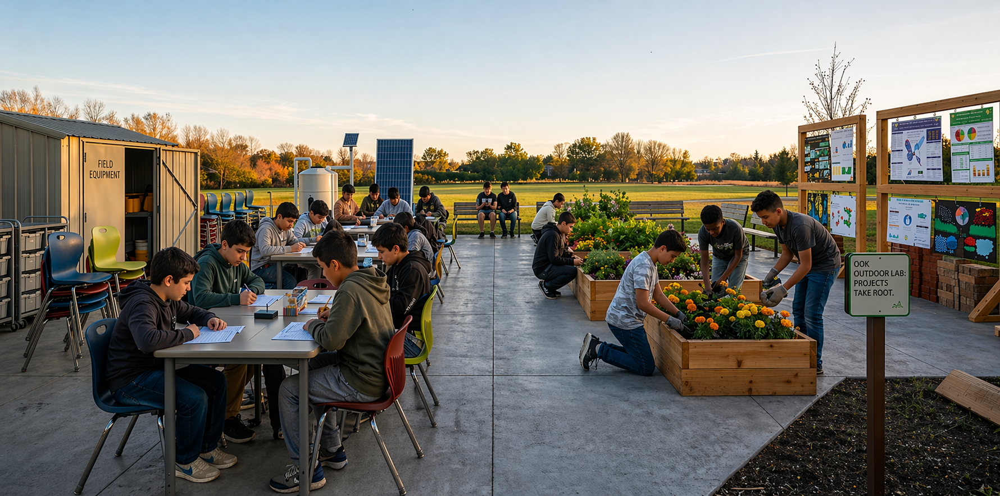
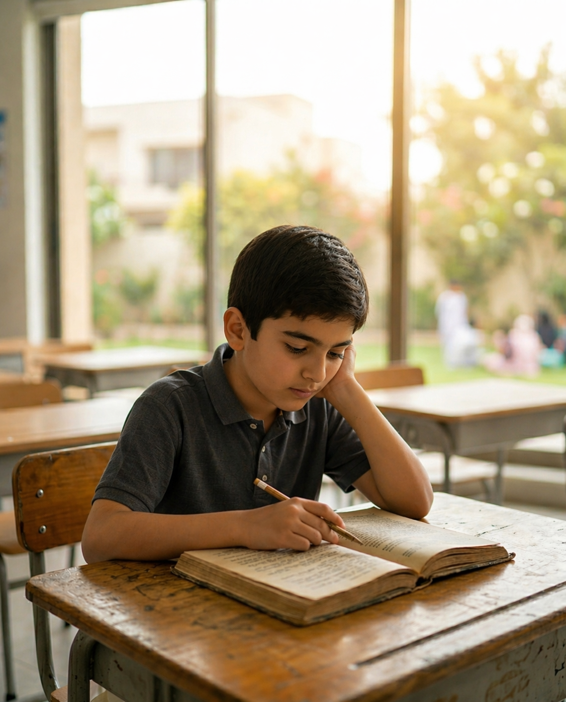
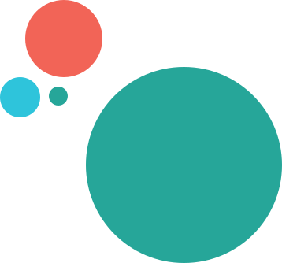

Connects knowledge
to real-world application
Students tackle actual problems, not textbook scenarios

Not memorizing. Not repeating. Learning through building, questioning, solving, and understanding the world.
What schools teach today
What the world actually needs

Transforming how learning happens inside institutions. Integrating project-based methodologies into structured learning environments.
Become A PartnerLearning is disconnected from real life
Curiosity is replaced with correctness
Subjects are taught in isolation
Students rarely build, test, or apply
Project-Based Learning shifts learning from passive to active.
Instead of studying topics, students work on real problems.
Instead of completing tasks, they build solutions.
Connects knowledge
to real-world application
Students tackle actual problems, not textbook scenarios
Develops critical thinking
& collaboration
Teams think, debate and build together — real skills
Makes learning
meaningful and memorable
What you build, you remember — always
“Tell me and I forget. Teach me and I remember. Involve me and I learn.”
Most learning begins with answers. We begin with questions. Genesis is built on a simple belief — children don't learn best by being told, they learn by figuring things out. Through real-world challenges, hands-on exploration, and guided inquiry, learning becomes something they experience, not just study.

For schools and families who partner with Genesis, here is what becomes measurable and visible over time
Ability to think, not just recall
Students develop genuine understanding they can apply to new situations
Confidence in solving unfamiliar problems
Students stop avoiding hard questions and start leaning into them
Strong communication and collaboration
Working in teams teaches students to listen, contribute, and lead
Deeper understanding across subjects
PBL connects knowledge across disciplines instead of teaching in silos
Ownership of learning
Students go from passive receivers to active owners of their own education and growth
When Genesis partners with a school,
the change is visible — in classrooms,
in teachers, and in results.
Stronger classroom culture and participation
Teachers who are more confident and effective
Students ready to think, not just recall
An institution ahead of where education is going
Built to work within your existing school structure — not around it.
01Measurable growth in student confidence, thinking, and real-world skills.
02Teachers trained, mentored, and supported at every stage of the journey.
03We grow alongside your institution long-term — not a one-time engagement.
04Students design a water purification system using real engineering principles — sketching, building, testing, and presenting their solution.
Helping kids showcase their working model and explain the science of purification, emphasizing the importance of clean water as a shared blessing and a form of continuous charity (Sadaqah Jariyah) that benefits people.
What's the challenge and our purpose in solving it?
What might work?
Build and observe with care and honesty.
Look for patterns, evidence, and reflect.
Iterate based on data, striving for excellence.